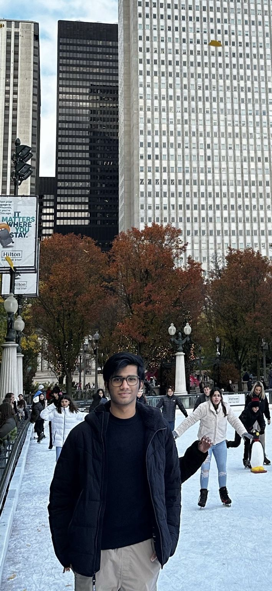

Four years. Four titles.
I played Division I field hockey in high school for four years, winning the title each year. It taught me discipline, teamwork, and healthy competition.
Business × economics × analytics

I played Division I field hockey in high school for four years, winning the title each year. It taught me discipline, teamwork, and healthy competition.
I know every man says this, but I can claim with 97% confidence that I make the best pasta.
P.S. I don’t break my spaghetti.
Avid reader, currently exploring purpose, balance, and the small habits that make life meaningful.
I’m a sports guy and love learning new things; I’ll probably be down for a game even after a long work week.
I fell in love with the game the second I landed in America. On game day, I’ll wear a jersey underneath.
Explore the board
The path that brought me here
I wanted to understand both how businesses make decisions and how economic forces shape them.
01 · Where I started
I grew up in India, then crossed the world to study at Indiana University.
02 · Why IU
IU gave me the chance to combine Kelley’s applied business education with rigorous quantitative economics.
03 · Two lenses
Together, these paths taught me to look at decisions from both sides: the organization making the choice and the economic forces around it.
The work behind the questions
Choose a card. The board will put the timeline in order.
A timeline with a slope
Tools and skills grew alongside the questions I was working on.
Hover or select a year
Each block highlights the tools and skills I used in that stretch.
Give an economist a timeline, and they’ll find a curve.
The research workbench
Five projects. Different questions. One board to work them through.
Selected case study
OPENWhich assumptions matter most across different business models?
A sourced valuation study across 15 companies in five sectors, comparing how DCF assumptions affect value.
Revenue growth led non-WACC sensitivity for 11 of 15 companies; EBIT margin led for the other 4.
The board is open
Have a question, an idea, or a project where business and economics meet? Send me a note.
Indiana University · Bloomington, Indiana